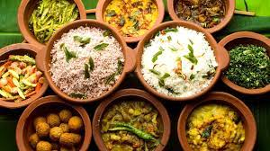

Welcome to Sri Lankan food recipe
collection
Experience the vibrant flavors of Sri Lanka through our culinary gateway!
Our first page invites you on a journey of tantalizing tastes and aromatic
spices unique to this tropical paradise. Delve into a treasure trove of
authentic Sri Lankan recipes, where rich heritage meets modern kitchen
mastery. From fragrant rice dishes like aromatic Biriyani to fiery curries
infused with coconut and spices, discover the soul-warming essence of our
cuisine. Uncover the secrets behind beloved dishes like Hoppers, Kottu Roti,
and delectable sweets like Watalappam. Join us in celebrating the diverse
and flavorful culinary tapestry that defines Sri Lankan gastronomy on every
enticing page.
